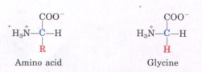
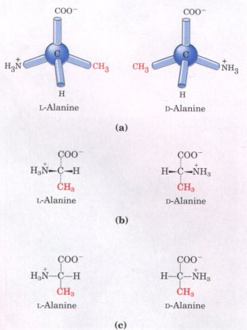
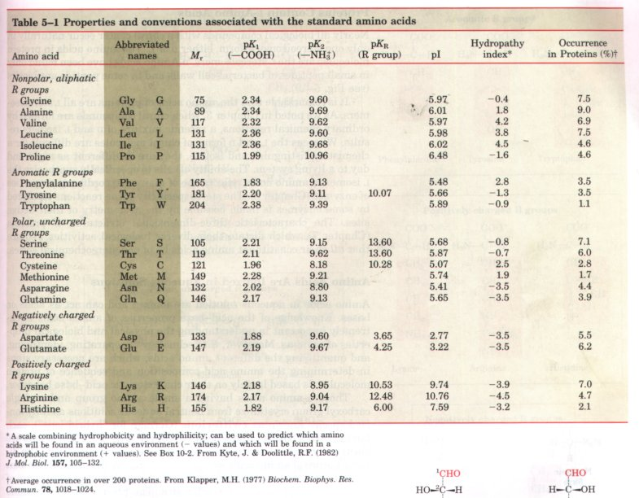
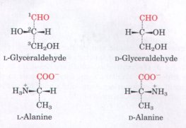
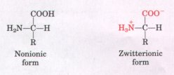
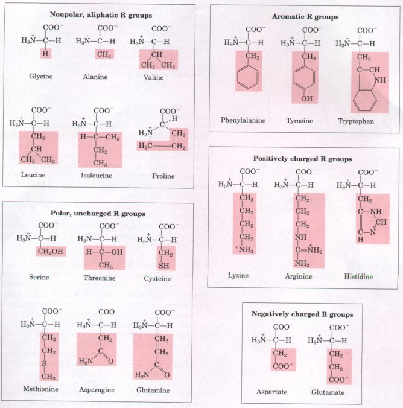
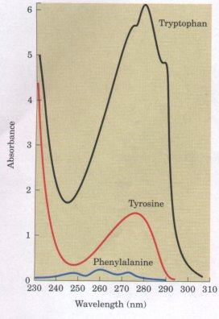
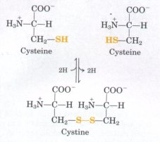

Proteins are the most abundant macromolecules in living cells, occurring in all cells and all parts of cells. Proteins also occur in great variety; thousands of different kinds may be found in a single cell. Moreover, proteins exhibit great diversity in their biological function. Their central role is made evident by the fact that proteins are the most important final products of the information pathways discussed in Part IV of this book. In a sense, they are the molecular instruments through which genetic information is expressed. It is appropriate to begin the study of biological macromolecules with the proteins, whose name derives from the Greek protos, meaning "first" or "foremost."
Relatively simple monomeric subunits provide the key to the structure of the thousands of different proteins. All proteins, whether from the most ancient lines of bacteria or from the most complex forms of life, are constructed from the same ubiquitous set of 20 amino acids, covalently linked in characteristic linear sequences. Because each of these amino acids has a distinctive side chain that determines its chemical properties, this group of 20 precursor molecules may be regarded as the alphabet in which the language of protein structure is written.
| Proteins are chains of amino acids, each
joined to its neighbor by a specific type of covalent
bond. What is most remarkable is that cells can produce
proteins that have strikingly different properties and
activities byjoining the same 20 amino acids in many
different combinations and sequences. From these building
blocks different organisms can make such widely diverse
products as enzymes, hormones, antibodies, the lens
protein of the eye, feathers, spider webs, rhinoceros
horns (Fig. 5-1), milk proteins, antibiotics, mushroom
poisons, and a myriad of other substances having distinct
biological activities. Protein structure and function is the topic for the next four chapters. In this chapter we begin with a description of amino acids and the covalent bonds that link them together in peptides and proteins. |
Figure 5-1 The protein keratin is formed by all vertebrates. It is the chief structural component of hair, scales, horn, wool, nails, and feathers. The black rhinoceros is nearing extinction in the wild because of the myths prevalent in some parts of the world that a powder derived from its horn has aphrodisiac properties. In reality, the chemical properties are no different from those of powdered bovine hooves or human fingernails. |
Proteins can be reduced to their constituent amino acids by a variety of methods, and the earliest studies of proteins naturally focused on the free amino acids derived from them. The first amino acid to be discovered in proteins was asparagine, in 1806. The last of the 20 to be found, threonine, was not identified until 1938. All the amino acids have trivial or common names, in some cases derived from the source from which they were first isolated. Asparagine was first found in asparagus, as one might guess; glutamate was found in wheat gluten; tyrosine was first isolated from cheese (thus its name is derived from the Greek tyros, "cheese"); and glycine (Greek glykos, "sweet") was so named because of its sweet taste.
Amino Acids Have Common Structural FeaturesAll of the 20 amino acids found in proteins have a carboxyl group and an amino group bonded to the same carbon atom (the a carbon) (Fig. 5-2). They differ from each other in their side chains, or R groups, which vary in structure, size, and electric charge, and influence the solubility of amino acids in water. When the R group contains additional carbons in a chain, they are designated β,γ, δ, ε, etc., proceeding out from the a carbon. The 20 amino acids of proteins are often referred to as the standard, primary, or normal amino acids, to distinguish them from amino acids within proteins that are modified after the proteins are synthesized, and from many other kinds of amino acids present in living organisms but not in proteins. The standard amino acids have been assigned three-letter abbreviations and one-letter symbols (Table 5-1), which are used as shorthand to indicate the composition and sequence of amino acids in proteins. We note in Figure 5-2 that for all the standard amino acids except one (glycine) the α carbon is asymmetric, bonded to four different substituent groups: a carboxyl group, an amino group, an R group, and a hydrogen atom. The α-carbon atom is thus a chiral center (see Fig. 3-9). Because of the tetrahedral arrangement of the bonding orbitals around the α-carbon atom of amino acids, the four different substituent groups can occupy two different arrangements in space, which are nonsuperimposable mirror images of each other (Fig. 5-3). These two forms are called enantiomers or stereoisomers (see Fig. 3-9). All molecules with a chiral center are also optically active-i.e., they can rotate plane-polarized light, with the direction of the rotation dif fering for different stereoisomers. |
 Figure 5-2 General structure of the amino acids found in proteins. With the exception of the nature of the R group, this structure is common to all the α-amino acids. (Proline, because it is an imino acid, is an exceptional component of proteins.) The α carbon is shown in blue. R (in red) represents the R group or side chain, which is different in each amino acid. In all amino acids except glycine (shown for comparison) the α-carbon atom has four difl'erent substituent groups.  Figure 5-3(a ) The two stereoisomers of alanine. L- and D-alanine are nonsuperimposable mirror images of each other. (b, c) 'Iwo different conventions for showing the configurations in space of stereoisomers. In perspective formulas (b) the wedge-shaped bonds project out of the plane of the paper, the dashed bonds behind it. In projection formulas (c)the horizontal bonds are assumed to project out of the plane of the paper, the vertical bonds behind. However, projection formulas are often used casually without reference to stereochemical configuration. |

* A scale combining hydrophobicity and hydrophilicity; can be used to predict which amino acids will be found in an aqueous environment (- values) and which will be found in a hydrophobic environment (+ values). See Box 10-2. From Kyte, J. & Doolittle, R.F. (1982) J. Mol. Biol. 157, 105-132.
Average occurrence in over 200 proteins. From Klapper, M.H. (1977) Biochem. Biophys. Res. Commun. 78, 1018-1024.
| The classification and naming of stereoisomers is based on the absolute configuration of the four substituents of the asymmetric carbon atom. For this purpose a reference compound has been chosen, to which all other optically active compounds are compared. This reference compound is the 3-carbon sugar glyceraldehyde (Fig. 5-4), the smallest sugar to have an asymmetric carbon atom. The naming of configurations of both simple sugars and amino acids is based on the absolute configuration of glyceraldehyde, as established by x-ray dif fraction analysis. The stereoisomers of all chiral compounds having a configuration related to that of L-glyceraldehyde are designated L(for levorotatory, derived from levo, meaning "left"), and the stereoisomers related to D-glyceraldehyde are designated D (for dextrorotatory, derived from dextro, meaning "right"). The symbols 1. and D thus refer to the absolute configuration of the four substituents around the chiral carbon. |  Figure 5-4 Steric relationship of the stereoisomers of alanine to the absolute configuration of L- and D-glyceraldehyde. In these perspective formulas, the carbons are lined up vertically, with the chiral atom in the center. The carbons in these molecules are numbered beginning with the aldehyde or carboxyl carbons on the end, or 1 to 3 from top to bottomas shown. When presented in this way, the R group of the amino acid (in this case the methyl groupof alanine) is always below the a carbon. L-Amino acids are those with the α-amino group on the left, and D-amino acids have the a-amino group on the right. |
Nearly all biological compounds with a chiral center occur naturally in only one stereoisomeric form, either D or L. The amino acids in protein molecules are the L stereoisomers. D--Amino acids have been found only in small peptides of bacterial cell walls and in some peptide antibiotics (see Fig. 5-19).
It is remarkable that the amino acids of proteins are all L- stereoisomers. As we noted in Chapter 3, when chiral compounds are formed by ordinary chemical reactions, a racemic mixture of D- and L-, isomers results. Whereas the L- and D- forms of chiral molecules are difficult for a chemist to distinguish and isolate, they are as different as night and day to a living system. The ability of cells to specifically synthesize the L- isomer of amino acids reflects one of many extraordinary properties of enzymes (Chapter 8). The stereospecificity of the reactions catalyzed by some enzymes is made possible by the asymmetry of their active sites. The characteristic three-dimensional structures of proteins (Chapter 7), which dictate their diverse biological activities, require that all their constituent amino acids be of one stereochemical series.
Amino acids in aqueous solution are ionized and can act as acids or bases. Knowledge of the acid-base properties of amino acids is extremely important in understanding the physical and biological properties of proteins. Moreover, the technology of separating, identifying, and quantifying the different amino acids, which are necessary steps in determining the amino acid composition and sequence of protein molecules, is based largely on their characteristic acid-base behavior.
| Those a-amino acids having a single amino group and a single carboxyl group crystallize from neutral aqueous solutions as fully ionized species known as zwitterions (German for "hybrid ions"), each having both a positive and a negative charge (Fig. 5-5). These ions are electrically neutral and remain stationary in an electric field. The dipolar nature of amino acids was first suggested by the observation that crystalline amino acids have melting points much higher than those of other organic molecules of similar size. The crystal lattice of amino acids is held together by strong electrostatic forces between positively and negatively charged functional groups of neighboring molecules, resembling the stable ionic crystal lattice of NaCI (see Fig. 4-6). |  Figure 5-5 Nonionic and zwitterionic forms of amino acids. Note the separation of the + and charges in the zwitterion, which makes it an electric dipole. The nonionic form does not occur in significant amounts in aqueous solutions. The zwitterion predominates at neutral pH. |
An understanding of the chemical properties of the standard amino acids is central to an understanding of much of biochemistry. The topic can be simplified by grouping the amino acids into classes based on the properties of their R groups (Table 5-1), in particular, their polarity or tendency to interact with water at biological pH (near pH 7.0). The polarity of the R groups varies widely, from totally nonpolar or hydrophobic (water-insoluble) to highly polar or hydrophilic (water-soluble).
The structures of the 20 standard amino acids are shown in Figure 5-6, and many of their properties are listed in Table 5-1. There are five main classes of amino acids, those whose R groups are: nonpolar and aliphatic; aromatic (generally nonpolar); polar but uncharged; negatively charged; and positively charged. Within each class there are gradations of polarity, size, and shape of the R groups.

Figure 5-6 The 20 standard amino acids of proteins. They are shown with their amino and carboxyl groups ionized, as they would occur at pH 7.0. The portions in black are those common to all the amino acids; the portions shaded in red are the R groups.
Nonpolar, Alzphatic R Groups The hydrocarbon R groups in this class of amino acids are nonpolar and hydrophobic (Fig. 5-6). The bulky side chains of alanine, valine, leucine, and isoleucine, with their distinctive shapes, are important in promoting hydrophobic interactions within protein structures. Glycine has the simplest amino acid structure. Where it is present in a protein, the minimal steric hindrance of the glycine side chain allows much more structural flexibility than the other amino acids. Proline represents the opposite structural extreme. The secondary amino (imino) group is held in a rigid conformation that reduces the structural flexibility of the protein at that point.
| Aromatic R Groups Phenylalanine,
tyrosine, and tryptophan, with
their aromatic side chains (Fig. 5-6), are relatively
nonpolar (hydrophobic). All can participate in
hydrophobic interactions, which are particularly strong
when the aromatic groups are stacked on one another. The
hydroxyl group of tyrosine can form hydrogen bonds, and
it acts as an important functional group in the activity
of some enzymes. Tyrosine and tryptophan are
significantly more polar than phenylalanine because of
the tyrosine hydroxyl group and the nitrogen of the
tryptophan indole ring. Tryptophan and tyrosine, and to a lesser extent phenylalanine, absorb ultraviolet light (Fig. 5-7 and Box 5-1). This accounts for the characteristic strong absorbance of light by proteins at a wavelength of 280 nm, and is a property exploited by researchers in the characterization of proteins. Polar, Uncharged R Groups The R groups of these amino acids (Fig. 5-6) are more soluble in water, or hydrophilic, than those of the nonpolar amino acids, because they contain functional groups that form hydrogen bonds with water. This class of amino acids includes serine, threonine, cysteine, methionine, asparagine, and glutamine. The polarity of serine and threonine is contributed by their hydroxyl groups; that of cysteine and methionine by their sulfur atom; and that of asparagine and glutamine by their amide groups. |
 Figure 5-7 Comparison of the light absorbance spectra of the aromatic amino acids at pH 6.0. The amino acids are present in equimolar amounts(10-3 M) under identical conditions. The light absorbance of tryptophan is as much as fourfold higher than that of tyrosine. Phenylalanine absorbs less light than either tryptophan or tyrosine. Note that the absorbance maximum for tryptophan and tyrosine occurs near a wavelength of 280 nm. |

Asparagine and glutamine are the amides of two other amino acids also found in proteins, aspartate and glutamate, respectively, to which asparagine and glutamine are easily hydrolyzed by acid or base. Cysteine has an R group (a thiol group) that is approximately as acidic as the hydroxyl group of tyrosine. Cysteine requires special mention for another reason. It is readily oxidized to form a covalently linked dimeric amino acid called cystine, in which two cysteine molecules are joined by a disulfide bridge. Disulfide bridges of this kind occur in many proteins, stabilizing their structures.Negatiuely Charged (Acidic) R Groups The two amino acids having R groups with a net negative charge at pH 7.0 are aspartate and glutamate, each with a second carboxyl group (Fig. 5-6). These amino acids are the parent compounds of asparagine and glutamine, respectively.
Positiuely Charged (Basic) R Groups The amino acids in which the R groups have a net positive charge at pH 7.0 are lysine, which has a second amino group at the e position on its aliphatic chain; arginine, which has a positively charged guanidino group; and histidine, containing an imidazole group (Fig. 5-6). Histidine is the only standard amino acid having a side chain with a pKa near neutrality.
Box 5-1 Absorption of Light by Molecules: The Lambert-Beer Law
It is important to note that each millimeter path length of absorbing solution in a 1.0 cm cell absorbs not a constant amount but a constant fraction of the incident light. However, with an absorbing layer of fixed path length, the absorbance A is directly proportional to the concentration of the absorbing solute. The molar absorption coefficient varies with the nature of the absorbing compound, the solvent, the wavelength, and also with pH if the light-absorbing species is in equilibrium with another species having a different spectrum through gain or loss of protons. In practice, absorbance measurements are usually made on a set of standard solutions of known concentration at a fixed wavelength. A sample of unknown concentration can then be compared with the resulting standard curve, as shown in Figure 1. |